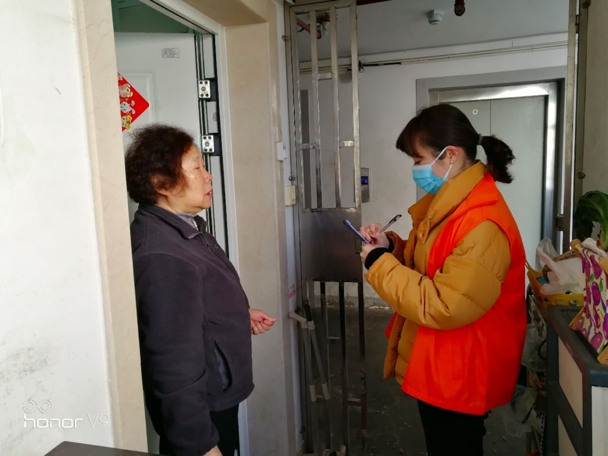

口述实录 | 为什么我要当志愿者接送病人和医生？
原文链接 备份链接 防护和消毒还是很重视的，每送一次，全车消毒一次。 口 述 | 尹 达 整 理 | 黄 祺 我叫尹达，现在是武汉龙安社区的一名志愿者司机。 我的工作是保险销售，疫情发生之前，我一般每天一早去公司，然后出门拜访客户。如果去 …
说不累肯定是假的，但是再累，也得坚持。我们工作做到位了，小区居民的健康才能更有保障。希望这次疫情赶快过去。
口述 | 周 荣
整理 | 应 琛
我是静安区芷江西路街道三兴居民区的党总支书记。老实说，基层防控的压力是挺大的。我在这里工作了11年，面对这样程度的疫情也是第一次。没有经验，很多工作也是边做边摸索。我从小年夜开始就没有休息过，我们居委会的其他人从初三开始也都一直没有停过。

周荣在贴健康告示
1月25日初一当天，我值班的时候，就接到有人举报辖区内的一家宾馆可能有问题。我便马上到该宾馆进行核实，这里果然住了一对从湖北云梦县来的老夫妻。他们的儿子是租住在我们小区里的，因为家里地方小，老夫妻就住在了宾馆里，已经几天了。我立即向街道汇报了这个情况。
我们居委会开展宣传工作其实还算比较早的，年前就贴了相关的告示，要求居民如果是从湖北省回来的一定要到居委会进行登记。初二那天早上，有一户居民主动打电话过来，说全家人初一晚上刚刚从湖北襄阳探亲回来，因为看到我们贴的告示知道这种情况需要告知居委会。

在辖区内开展健康宣传
连续两件事情，让我觉得很慌，心里没有底，不知道居民区里到底还有多少这样的情况。因为当时，我们拿到的可疑名单都是从上面下来的，但是从小区自下而上的没有。如果有人不那么自觉报上来，他从湖北回来或者有密切接触史的就躲在家里，如果他还出来走动了……这样的后果就很严重了，可能就是封小区了。
想到这里，我立即让所有人初三来上班，大家开了个碰头会，准备对我们居民区管辖的三个小区1536户居民开展全面排查。
1月28日，从早上8点开始，我们一共8个人，两人一组，就按照划定的区块分头去居民家敲门。后来觉得时间不够，为了增加效率，我们又变成每个人单独行动，一旦有人完成了自己分包的区块，就立即支援其他人，一直到晚上8点。第二天，我们就把前一天剩余的人家全部走访到了。

居委会挨家挨户地敲门进行登记
第一轮排查，我们大概敲开了800多户居民的门。一是登记他们去过哪里，有没有武汉相关接触史，二是建议他们减少外出，做好个人防护，如果有需要可以随时联系居委会。对于那些没有敲开的，我们会在门上贴上留言条，请他们看到第一时间联系居委会。

对于未开门的居民，周荣贴上了“留言条”
我们要求达到百分之百的“见面率”，要么把门敲开见到本人，要么接到他们看到留言条后打过来的电话。对于没有“见面”的人家，我们后来就每天上下午两次再去敲门，直到敲开为止。
其中，有一户我负责的人家，门上的留言条被撕了，但门却一直敲不开。我大概敲了七八次之后，楼下保安和邻居都告诉我他们家其实是有人的。我就急了，不知道他们家是什么情况。当时也是憋足了一口气，一天两次不够，那就来三次，我就不信敲不开你家的门了。
终于，在第15次的时候，这户人家总算开门了。我当时长舒一口气，脱口而出：“拿本事阿蛮杜哦！（你们本事也是蛮大的）”
了解下来得知，最早的时候，夫妻俩在家，但因为不确定我们的身份，以及害怕接触传染，故意没开门。后来，有时候他俩会去小孩家帮忙带孙子，确实是不在家。但看到我们小区又封门，又禁止外卖和快递进来，觉得其实挺安全的，这才放心给我们开了门。
虽然给我们的工作增加了麻烦，但走的时候，我还是表扬了他们的这种谨慎。毕竟面对疫情，小心一点总是没错的。

居委会工作人员检查进小区的登记情况
除了这对夫妻，我同事在排查的时候也发现了一户人家家里有湖北来的人。开门的是一个男的说自己没有出过上海，但我同事看到屋里还有两个人。再三追问之下，对方才承认了自己是从湖北来的。看到登记的名字之后，我马上反应过来，他们正是前几天我在宾馆查到的那一对老夫妻。原来宾馆不让他们住了以后，他们便住到了儿子家。我同事说，这对老夫妻当时就说，“你们动作怎么这么快，我昨天下午才住过来，又被你们逮到了”。
大排查之后，每天我们都会开会更新进度。有次，开会的时候，我低头一看，突然发现脚上穿的鞋子都裂开了。他们也看了看自己穿的鞋子，发现都有不同程度的磨损。因为要走路，大家基本上都是盯着同一双合脚的鞋子在穿。

磨损的鞋子
针对发现的两户湖北相关的居民，医疗方面由社区医院、疾控中心的老师负责。而我们居委会，每天除了至少打一个电话，买菜、取快递等生活上的需要肯定都包了。
到目前（2月5日）为止，大概还有246户居民，我们没有联系上。现在这个数字每天在下降。接下去是返沪高峰了，我们会进一步跟进。同样，还有辖区内企业的复工，我们也会积极和物业配合，开展相关工作。

前来预约购买口罩的居民进门前都要进行体温测量
说不累肯定是假的，但是再累，也得坚持。我们工作做到位了，小区居民的健康才能更有保障。希望这次疫情赶快过去。
征集令
“战疫”成败，匹夫有责。
《新民周刊》现面向全国征集新冠肺炎采访对象和真实故事：
如果你是参与抗击新冠肺炎疫情的医护人员或其家属，我们希望聆听你的“战役”故事，也希望传达你的诉求。
如果你是确诊、疑似患者本人或家属，我们希望了解你和家人如何“抗疫”的过程，让外界了解你的真实经历。
如果你是疫情严重地区的普通市民，我们希望展现你的乐观，并倾听你所需的帮助。
如果你是公共服务人员或各类捐助者，我们希望看到你的“最美逆行”，记录下你的无私。
……
抗击新冠肺炎疫情，我们诚征对疫情了解的社会各界人士，提供相关线索，说出你的故事，让我们用新闻留存这一切。
《新民周刊》新冠肺炎线索征集值班编辑联系方式（添加时请简要自我介绍）：
周一：应 琛 微信号：paulineying0127
周二：金 姬 微信号：gepetta
周三：黄 祺 微信号：wxid_bf5mudid7oz322
周四：周 洁 微信号：asyouasyou
周五：孔冰欣 微信号：kbx875055141
周六：吴 雪 微信号：shyshine1105
周日：姜浩峰 微信号：jianggeladandong
新闻是历史的底稿，你们是历史的见证者。期待你的故事、你的线索！

▼
大家还都在看这些
▼
转载请在评论区留言，获得授权！
转载时，须注明作者、出处和微信号


原文链接 备份链接 防护和消毒还是很重视的，每送一次，全车消毒一次。 口 述 | 尹 达 整 理 | 黄 祺 我叫尹达，现在是武汉龙安社区的一名志愿者司机。 我的工作是保险销售，疫情发生之前，我一般每天一早去公司，然后出门拜访客户。如果去 …
原文链接 备份链接 这样的经历让我们这次“两人世界”变得很值得、很难忘，也很有意义。当我们跟家里老人说，将帮助海外华人实现爱心心愿、把援助物资运回国时，他们也都非常支持。老人还让我们放心，说家里孩子都没事。 口述 | 王珠凤 整理 | …
原文链接 备份链接 透过这个手机屏中的微信群，从空中飞机俯瞰，一家姊妹兄弟五人组成的一个手掌，不知不觉中，五指并拢，形成了一个加油鼓劲的拳头…… 文 | 刘 放 一面手机屏，能汇天下事。 我们家的家族微信群，虽容纳面不算太大，却也差不多 …
原文链接 备份链接 记者观察|中国式防疫 一个山东县城的“防控战” 2020-02-02 23:33 作者：陈茂利 来源：中国经营网 本报记者 陈茂利 山东报道 “通知我要求带着房产证和行车证来录入信息。”山东省某县城一小区住户告诉《中国 …
原文链接 备份链接 老母亲问我为啥这么拼命，又没人给开工资。我回说，这次真的拼了命了，只因为我是您的孩子，也是一个父亲。这不，我看到日本朋友捐助武汉的物资上，日本汉语水平考试事务所物资上的字——“山川异域，风月同天”。作为武汉人，难道我不 …